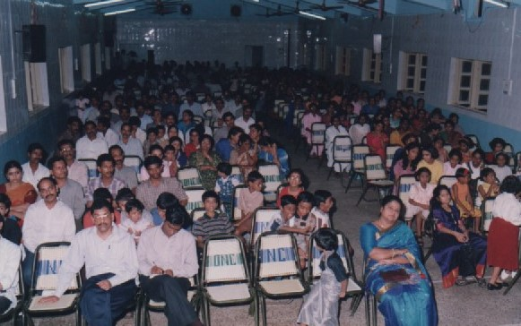
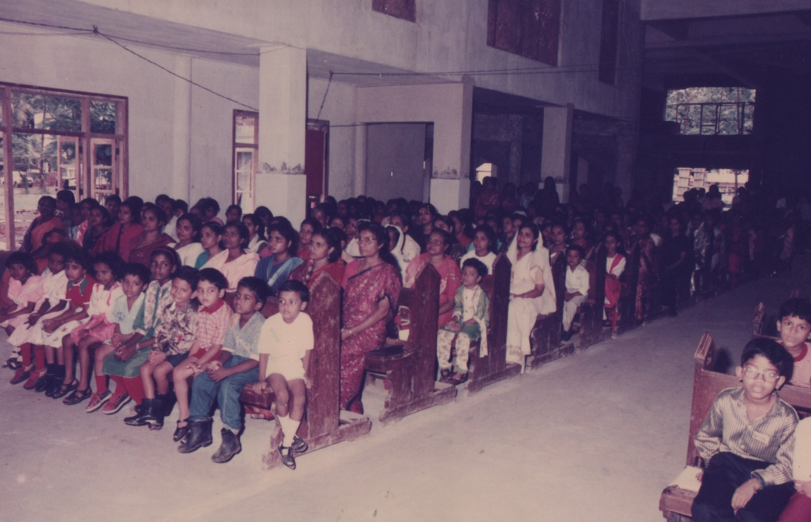
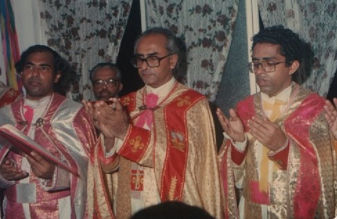
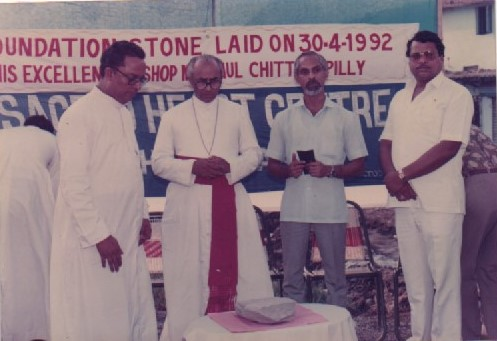
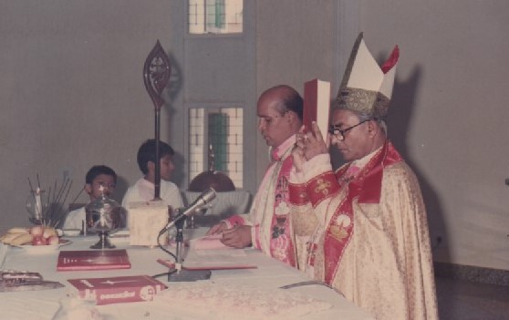

Introduction
Sacred Heart Church, which began as a tiny congregation in 1980, has now expanded to include over 270 families who fervently contributed to preserving the religion passed down by St. Thomas, the apostle. Since its founding till the present, Sacred Heart Church has worked to find ways to reach out spiritually and support the social advancement of the neighbourhood with the assistance of vicars and parishioners. We firmly believe that everyone should worship the Most Sacred Heart of Jesus, regardless of age or social status.
History
Year 1980
— Commencement of the Bhayandar Syro-Malabar Community with a gathering of around 30 families.September 1984
— Celebration of the first Malayalam Qurbana in the Syro-Malabar rite by Rev. Fr. Chelsius C.M.I at Our Lady Of Nazareth Church. August 1985
— Beginning of Malayalam Qurbana services every other Sunday with the assistance from keralite priests from Shalini Bhavan, Sion and K.C.A. Bhavan,Santhacruz. September 1988
— Appointment of Rev. Fr. Varghese Nadackal as the first vicar of the nascent Sacred Heart ChurchAugust 1990
— Under the guidance of then-Vicar Rev. Fr. Jose Ainickal, efforts to construct a prayer hall began. April 1992
— Under the leadership of Rev. Fr. Davis Pullikkottill and Our Lady Of Nazareth Church Officials, a plot of 13 guntas was brought and His Excellency Mar Paul Chittilapilly, the First Bishop of Kalyan diocese laid the foundation stone. March 1997
— Rev. Fr. Joseph Pothenparampil, M.S.T. took charge as the Parish Priest
May 1999
— Formation of a 64 member committe for the construction of the Church with the blessings of,. Rev. Fr. Antony Kollannur, the then Chancellor of Kalyan Eparchy February 2001
— Consecration of the sacred Heart Church along with the inauguration of the Bhayandar Sacred Heart Welfare Centre by Mr Praful Kashinath Patil, the chairman of Mira Bhayandar Muncipal Council.